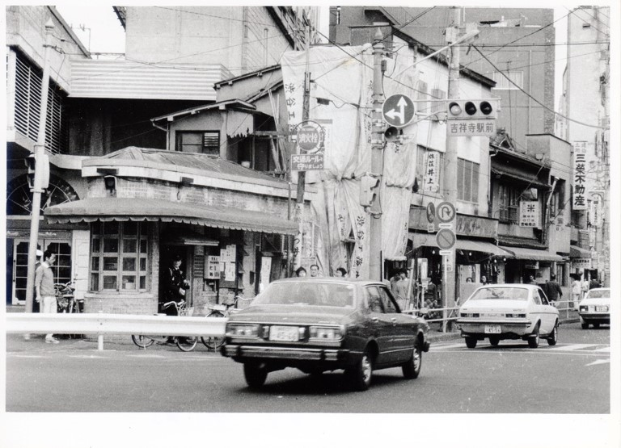
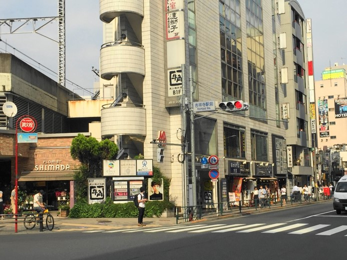

吉祥寺駅前交差点


信号機の下に「吉祥寺駅前」と書かれているこの交差点は、公園通り（吉祥寺通り）と井の頭通りが交わる場所である。写真の左半分に写っている交番、右半分に写っている「宮崎商店」や「三榮不動産」、 「麻雀ロン」などの店名を1973年（昭和48）年の地図で確認することができる。
交番は現在、この交差点の公園通りを挟んだ西側に移転している。当初の計画では、公園通りの拡幅工事にともなって南口の交番を北口の交番と統合し、強化することになっていた。しかし、地元の人々が防犯や交通対策への不安を訴えたため、市が警視庁と対策を協議することになった。現在交番がある場所への移転について、警察は鉄道のガード下であることから、騒音によって警察官の仮眠に不都合があるとの理由で難色を示した。これに対し、防音装置や建築工法に工夫を凝らし、騒音を低いレベルに抑えることで、警察側も納得し、1979年３月に現在の場所に移動することで解決を見た。公園通りの一番ガード寄りの店舗が買収契約を結んでいるのが1980年であることと考え合わせると、この写真が撮影されたのは1980年代初頭であると推定される。